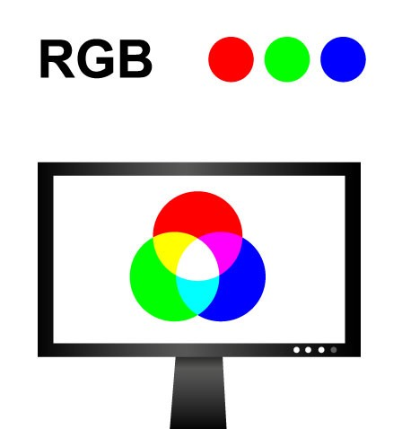
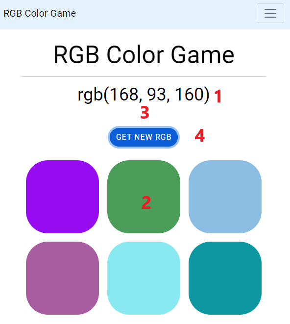

Hello!
We're so glad you're here!
For whatever reason you stumble across our website, we can assure you that this is the right place. Here you will find valuable information about how RGB works, what use it has and finaly be able to practice your skills by the use of a fun game. All you need to do now is to explore the page and have fun doing so, let's begin!
RGB
What RGB is
It is most likely that if youve designed for a web application or worked on a coloring app you have stumled across RGB. Whilst many of us know that when someone want to designing anything, color becomes a crusial part and you will in this case need to identify which color module you would prefere to use. A lot depending on what application you are using the color/colors for.
RGB are used primarily for computer screen applications and also know for being one of the most commonly used color modules. It consists of Red, Green and blue hues that can create a large amout of different colors when combined. You can think of it as someone mixing two acrylic colors on a color palet let's say blue and red, that will make a deep purple color same goes for RGB when the three of it's values are implemented it will mix those colors and create your prefered color.
How RGB works
RGB is short for the colors Red, Green and Blue, It is used by numbers as rgb(0,0,255) that in this case gives us the color blue, this because the values shown defines the intensity of each color. So if I instead want the color green I must change the value to rgb(0,255,0) and the color will become green. These numbers that define the intensity of the colors stay between 0 that is the lowest and 255 that is the highest value. And that's why when you then rember the order of the RGB name (red,green and blue) it becomes more easy to guess what color the value provide.
How do we mean by that? Well if the value is high of red and high of blue but low of green, it most likely are so that the color is drawn towards a more purple color. With that in mind, you can more easily find a simple understanding of how RGB works and I would higly advice you to go and play the game to already test your skills. But before that make sure to look into the extra tips and tricks provided on this page to give you the best possible experience and learning outcom.
How to play
Step by step guide
On the image beside or under this text depending on what device you have, it shows how the rgb looks and have some numbers added to different sections each nuber is explained in the list of all the features the game have to offer and in return helsp one to understand how it works. Have a look:
1: A random RGB value is shown under the game name, it is this value you will pick the right color for.
2: Some of the colored squares is the correct color for the RGB value shown in step 1. Klick on them to choose the right one and you will either get correct or try again.
3: Under the RGB value you will get a message after pressing one of the squares, this will tell you if the answer was correct or not.
4: Here is a button that gives you the option to get a new RGB value if the first one was too hard this button then changes the RGB value when you press it as well as changing all the colors of the squares. Lastly if you guess correct this button will change to try again that after being clicked will give a new random RGB value and colored squares.
